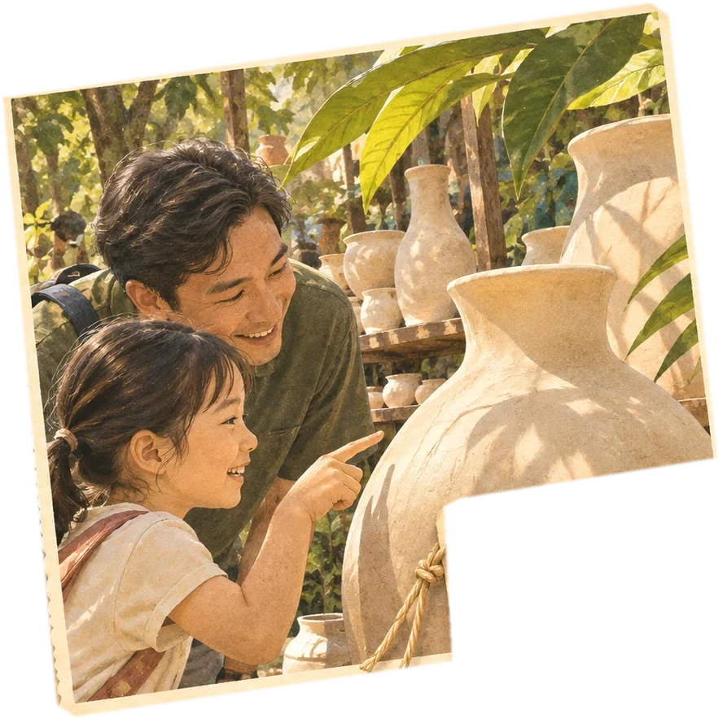

Self-guided visit
The official tour page welcomes independent visitors. Check the site details before setting out.
Visitor information
Pick a shape, follow its outline with your eyes and ask someone else what they see.
Play the looking gameThe official tour page welcomes independent visitors. Check the site details before setting out.
Visitor informationReview public class requirements or ask the studio about a private family group.
Private family workshops